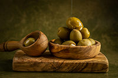

Welcome to Field & Feast
At Field & Feast, we believe that the finest meals begin at the source. Rooted in tradition yet refined for the modern palate, our farm-to-table philosophy celebrates the beauty of seasonality, sustainability, and craftsmanship. From the sun-drenched fields where our produce is grown to the artfully curated dishes we serve, every detail is designed to bring you an experience of unparalleled quality and flavor.
Our Offerings
-
Artisan Provisions
Hand-selected, seasonal ingredients sourced from our estate farm and trusted local growers. Each item is chosen for its freshness, flavor, and integrity.
-
Exclusive Dining Experiences
Join us for intimate chef-led tastings and farm-to-table feasts, where carefully crafted menus highlight the best of the season.
-
The Field & Feast Monthly Basket
Experience a curated selection of premium seasonal ingredients delivered to your doorstep each month.
- Hand-Harvested Produce: Fresh, organic fruits and vegetables.
- Artisan-Crafted Goods: Specialty cheeses, house-made preserves, and small-batch baked goods.
- Exclusive Recipes & Pairings: Thoughtfully designed by our chefs to inspire culinary creativity.
Elevate your home dining with the finest farm-to-table offerings, elegantly packaged and delivered with care.
A Gallery of Field & Feast
Experience the elegance and artistry behind Field & Feast through our curated collection of images. From lush fields and handcrafted ingredients to beautifully plated farm-to-table creations, each photo tells the story of our commitment to excellence.
-

Heirloom tomatoes at peak ripeness.
-

Drizzling golden olive oil over fresh harvest.
-

Elegant tablescape under the evening sky.
-

Artful plating with seasonal ingredients.
-

Our monthly basket, curated with care.